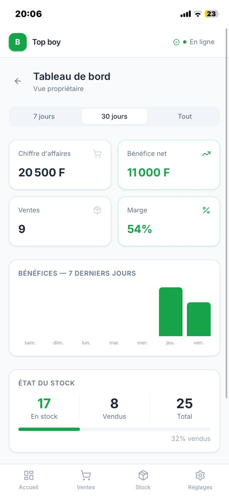
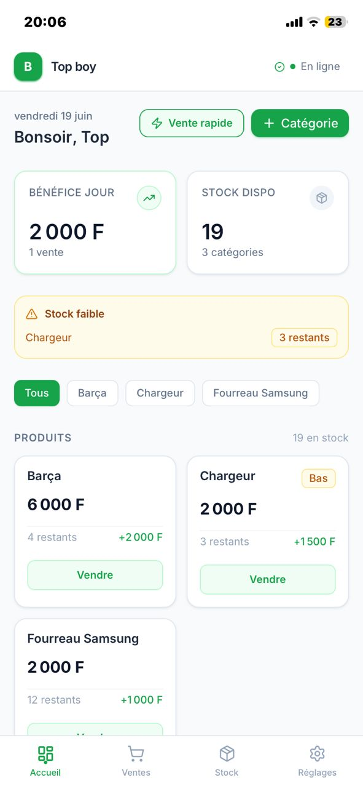
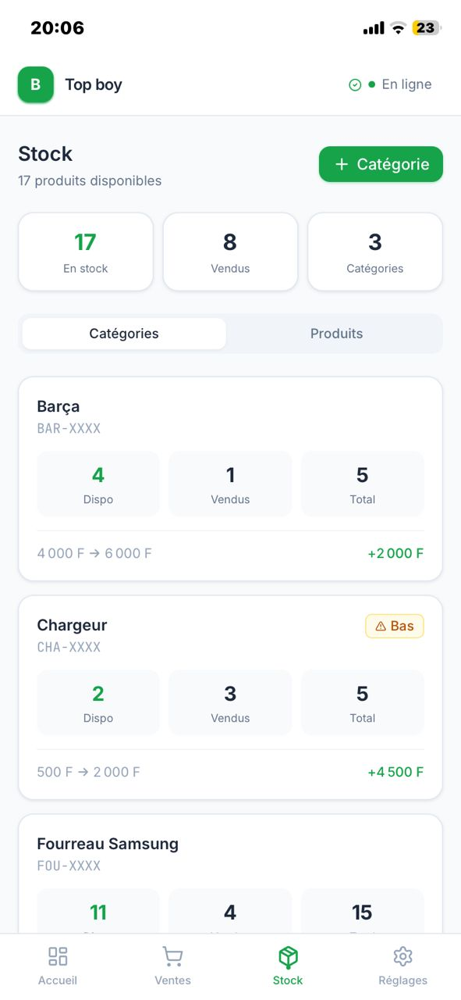
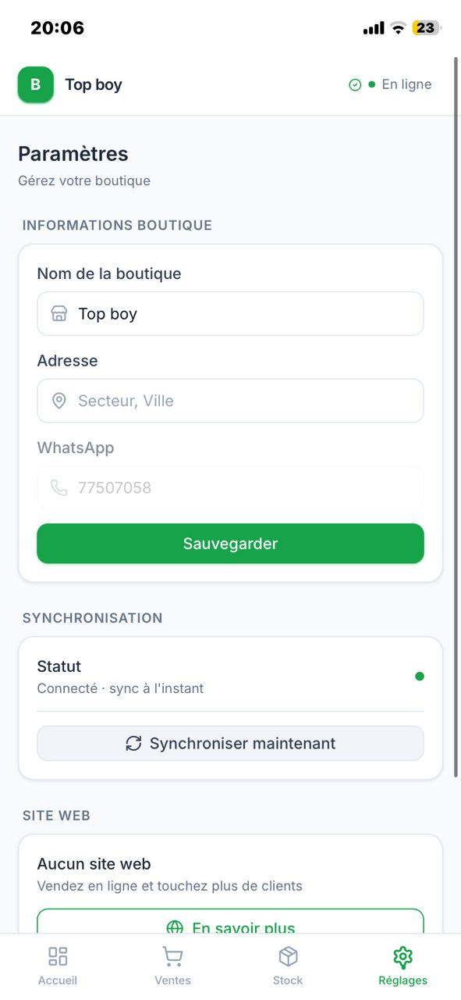
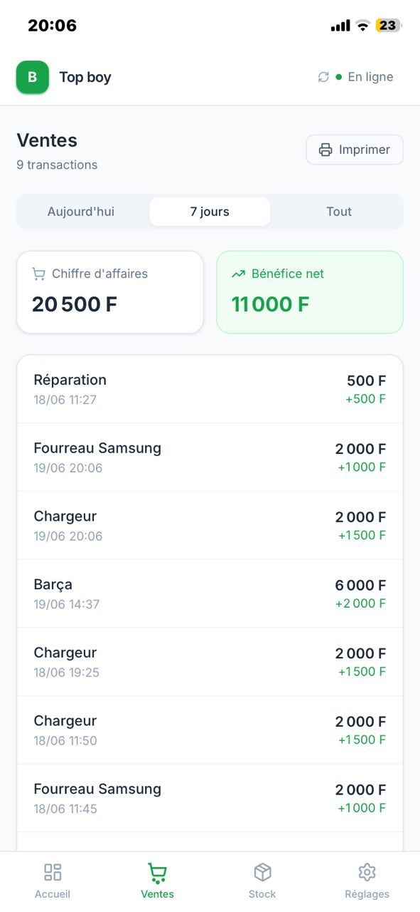

BoutiK est une application de gestion commerciale qui vous aide à suivre vos ventes, vos produits et votre stock depuis votre téléphone ou votre ordinateur.

Fonctionnalités
Des outils simples et efficaces pour gérer votre activité au quotidien, sans complexité inutile.
Enregistrez et suivez facilement toutes vos ventes en temps réel, avec un historique clair.
Ajoutez, modifiez et organisez vos produits rapidement avec photos, prix et catégories.
Gardez le contrôle sur vos quantités disponibles et recevez des alertes de stock faible.
Visualisez l'évolution de votre activité grâce à des graphiques clairs et des rapports simples.
Pourquoi BoutiK
BoutiK s'adapte à vos conditions de travail, même sans connexion stable.
Fonctionne hors connexion
Continuez à enregistrer vos ventes même sans Internet. Les données se synchronisent dès le retour du réseau.
Installation rapide
Installez BoutiK en moins d'une minute directement depuis votre navigateur, sans démarche complexe.
Compatible mobile et ordinateur
Une seule application, parfaitement adaptée à tous vos appareils — téléphone, tablette ou PC.
Interface simple
Une prise en main immédiate, sans formation nécessaire. Concentrez-vous sur votre commerce, pas sur l'outil.
Aucun store requis
Pas de Play Store, pas d'App Store. BoutiK s'installe directement depuis le navigateur, sans validation externe.
Données sécurisées
Vos données restent accessibles localement et peuvent être sauvegardées en toute sécurité.
Installation
BoutiK s'installe directement depuis votre navigateur. Choisissez votre appareil ci-dessous.
Aperçu
BoutiK est conçu pour être clair et rapide à prendre en main, quel que soit votre niveau technique.




Avis clients
Des commerçants qui utilisent BoutiK au quotidien partagent leur expérience.
"Avant BoutiK, je notais tout à la main dans un cahier. Maintenant je vois d'un coup d'œil ce qui se vend le mieux et ce qu'il faut commander. Franchement, ça m'a changé la vie."
"Je gère une petite boutique de vêtements et j'avais souvent des erreurs de stock. Avec BoutiK, tout est à jour en temps réel. L'installation a pris deux minutes, même mon employé a pu l'utiliser tout de suite."
"Ce qui m'a convaincu c'est que ça marche même quand le réseau est coupé. Dans mon quartier on perd souvent la connexion, mais mes ventes continuent d'être enregistrées sans problème."
"L'application est vraiment bien faite et simple à utiliser. Ce que j'attends encore c'est une option pour imprimer les reçus directement. Mais pour le reste, c'est solide — je la recommande à tous mes collègues."
FAQ
Commencez dès maintenant, sans inscription, sans installation depuis un store.
Accéder à BoutiK